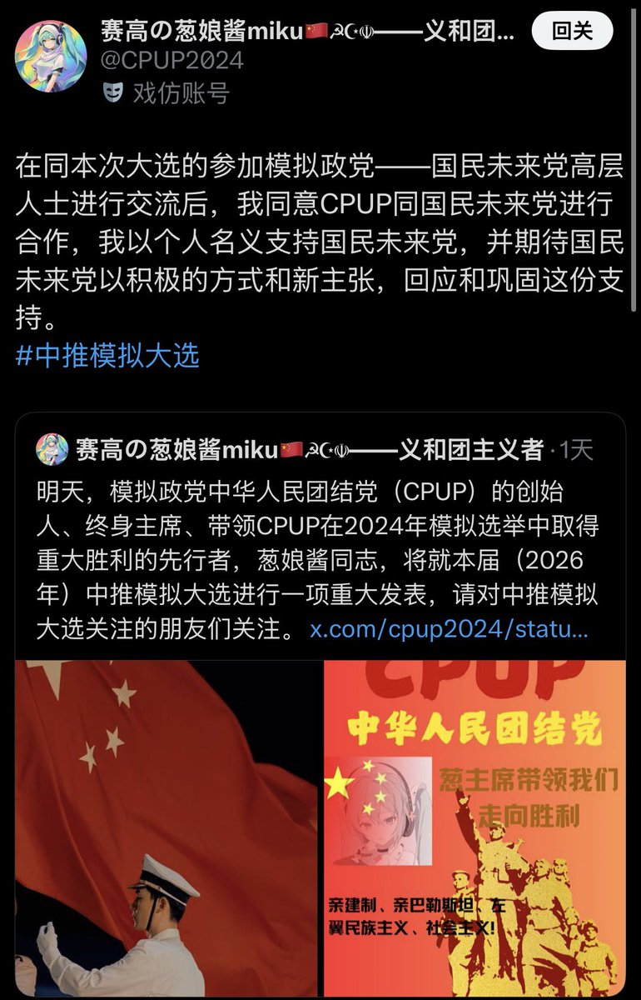
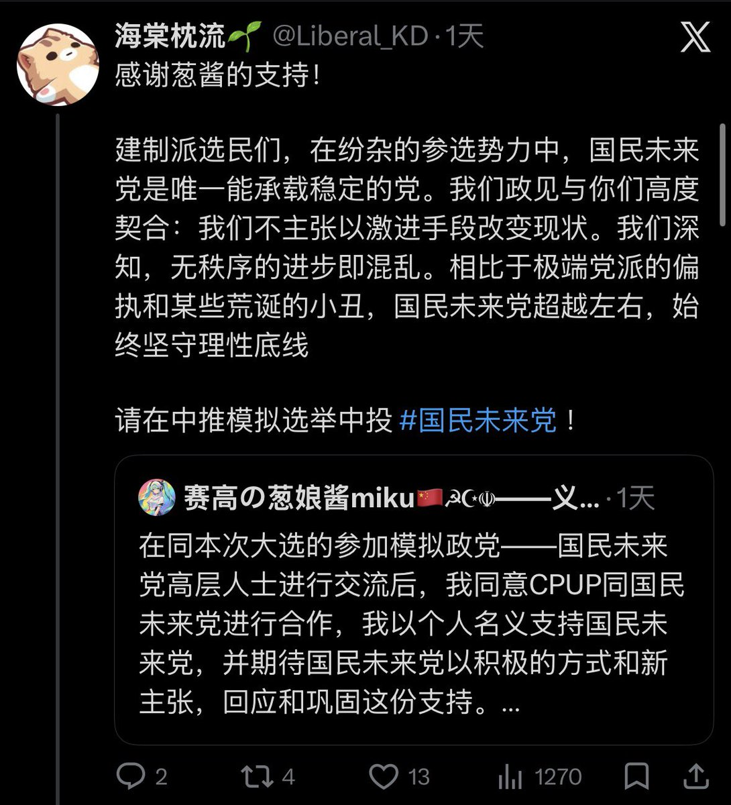
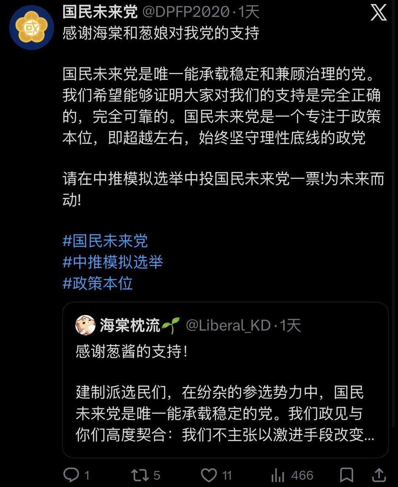
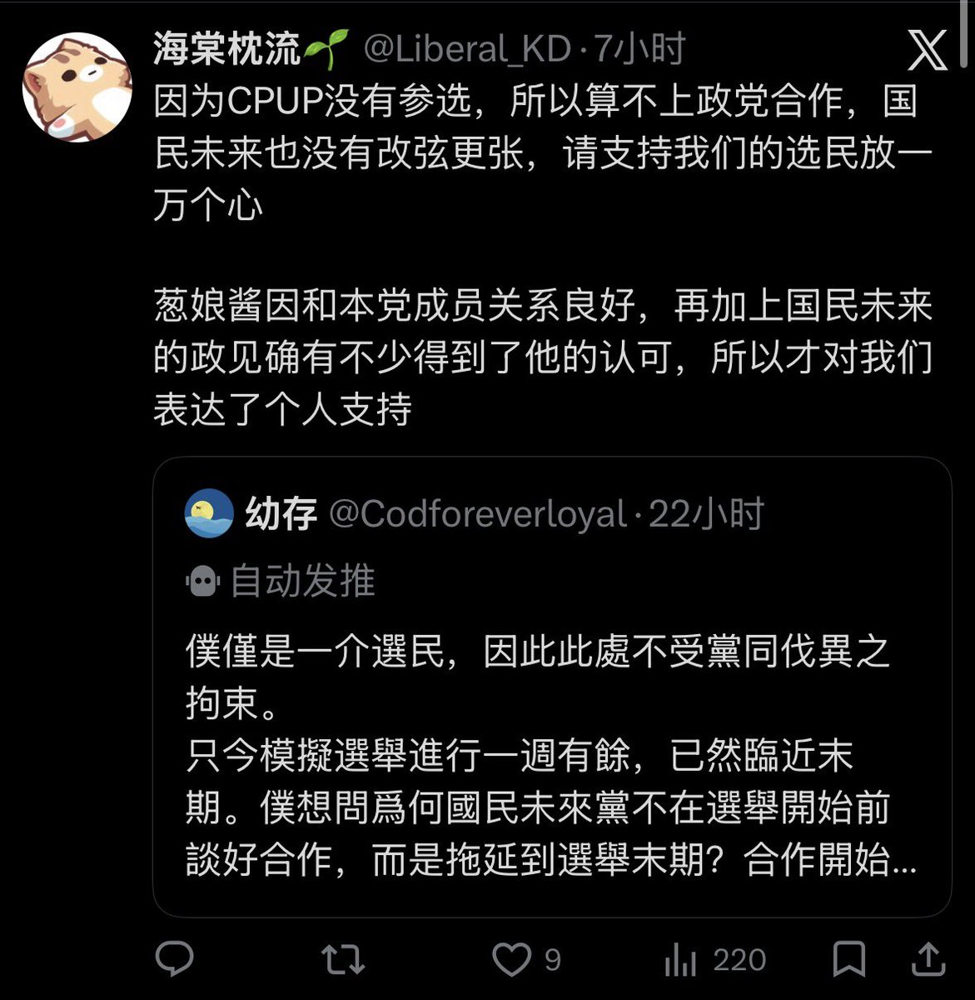

𝐀𝐬𝐡𝐥𝐞𝐲 𝐁𝐥𝐨𝐜𝐤🍥🌹🇹🇼🏳️⚧️🇪🇺
@bolckAshley
不要忘了，上一屆模擬選舉貴黨CSR最後還曾經打算跟當時的建制派政黨CPUP正式合作來著😁
更何況蔥娘只是自己以個人名義選擇了支持國民未來黨罷了，他本人可壓根沒加入啊😁




川和工团安卡🚩🇦🇶🔥
@aim20371231
#中推模拟选举
突发事件简要介绍：
著名建制派葱娘称和国未党高层人士交流后同意本次未参选的CPUP与国未合作并以个人身份支持国未。国未成员和官号对葱娘的支持表示感谢。后有选民和其他政党成员质疑国未是抛弃选民与建制派勾兑。国未成员称事件纯属葱娘个人主动支持国未，国未也不为相关高层行为负责 https://t.co/Ge8lrkQzQf https://t.co/iEdA5cWo6y